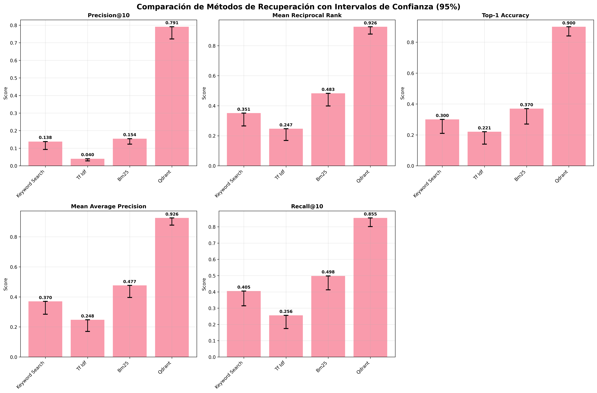
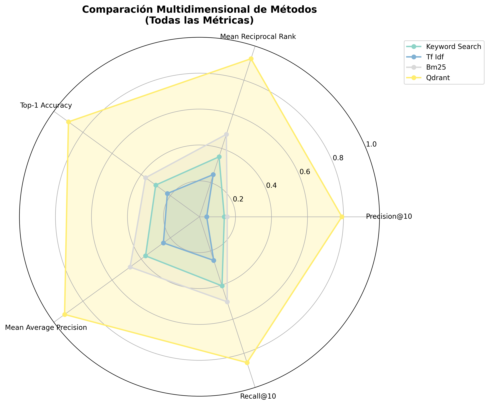
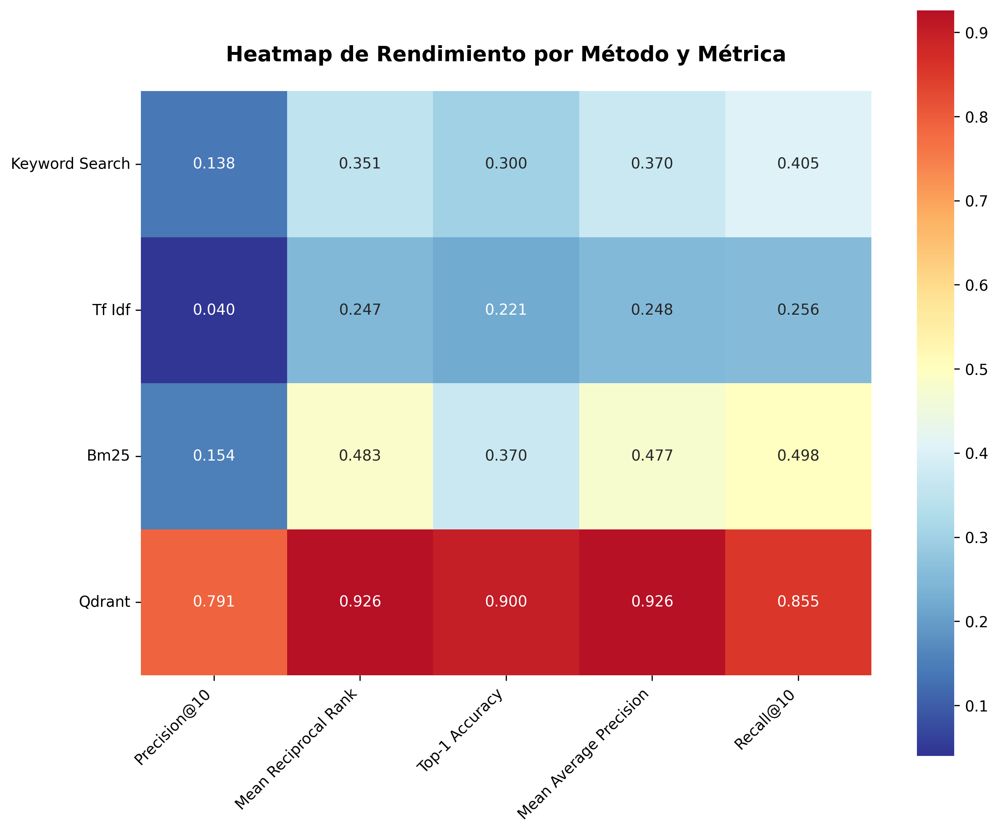
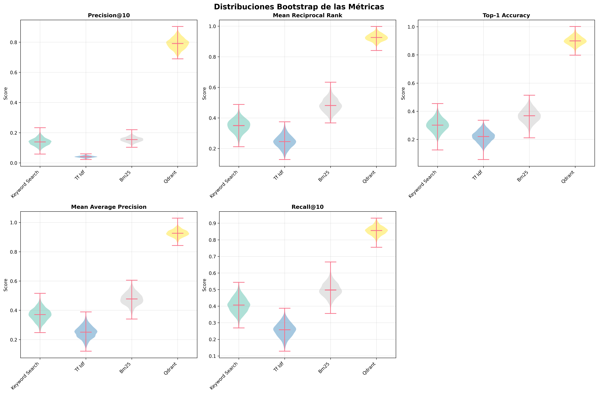
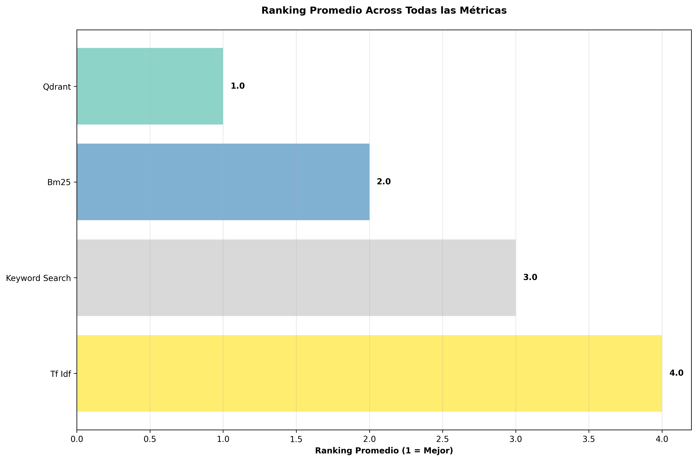

Este reporte compara 4 métodos de recuperación de información usando bootstrapping con 5,000 muestras para calcular intervalos de confianza del 95%. Se evaluaron 6 métricas sobre un total de 100 preguntas.
| Método | Precision@10 | MRR | Top-1 Accuracy | MAP | Recall@10 |
|---|---|---|---|---|---|
| Keyword Search |
0.1379 [0.0930, 0.1890] |
0.3513 [0.2656, 0.4398] |
0.3004 [0.2100, 0.3900] |
0.3704 [0.2842, 0.4599] |
0.4051 [0.3144, 0.4953] |
| Tf Idf |
0.0400 [0.0280, 0.0520] |
0.2472 [0.1689, 0.3293] |
0.2206 [0.1400, 0.3000] |
0.2478 [0.1699, 0.3301] |
0.2558 [0.1743, 0.3402] |
| Bm25 |
0.1541 [0.1230, 0.1880] |
0.4831 [0.3981, 0.5680] |
0.3700 [0.2700, 0.4700] |
0.4765 [0.3958, 0.5576] |
0.4982 [0.4128, 0.5818] |
| Qdrant |
0.7909 [0.7215, 0.8560] |
0.9260 [0.8777, 0.9670] |
0.8997 [0.8400, 0.9500] |
0.9260 [0.8777, 0.9670] |
0.8546 [0.8012, 0.9025] |

Esta gráfica muestra el rendimiento promedio de cada método con sus intervalos de confianza del {CONFIDENCE_LEVEL*100:.0f}%.

Visualización radar que permite comparar todos los métodos across múltiples métricas simultáneamente.

Mapa de calor que muestra la intensidad del rendimiento de cada método en cada métrica.

Violin plots que muestran las distribuciones bootstrap de las métricas para cada método.

Ranking general de los métodos basado en el promedio de posiciones across todas las métricas.
Basado en el análisis de bootstrapping con intervalos de confianza del 95%, el método Qdrant muestra el mejor rendimiento promedio across todas las métricas evaluadas.
Reporte generado automáticamente con bootstrapping estadístico
📅 Fecha de generación: 2025-09-02 06:27:17